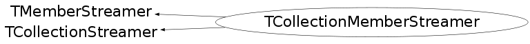

class TCollectionMemberStreamer: public TMemberStreamer, public TCollectionStreamer
Small helper to save proxy environment in the event of recursive calls.
Function Members (Methods)
public:
| TCollectionMemberStreamer() | |
| TCollectionMemberStreamer(const TCollectionMemberStreamer& c) | |
| virtual | ~TCollectionMemberStreamer() |
| void | TCollectionStreamer::AdoptStreamer(TGenCollectionProxy* streamer) |
| virtual const TClass* | TMemberStreamer::GetOnFileClass() const |
| virtual void | operator()(TBuffer& buff, void* obj, Int_t siz = 0) |
| TMemberStreamer& | TMemberStreamer::operator=(const TMemberStreamer&) |
| virtual void | TMemberStreamer::SetOnFileClass(const TClass* cl) |
| void | TCollectionStreamer::Streamer(TBuffer& refBuffer, void* obj, int siz, TClass* onFileClass) |
protected:
| void | TCollectionStreamer::InvalidProxyError() |
Data Members
protected:
| TGenCollectionProxy* | TCollectionStreamer::fStreamer | / Pointer to worker streamer |
Class Charts
{kind=link}
{kind=link}
{kind=link}
{kind=link}

Function documentation
void operator()(TBuffer &buff, void *obj )
Streamer for I/O handling
{ Streamer(buff,obj,0,fOnFileClass); }